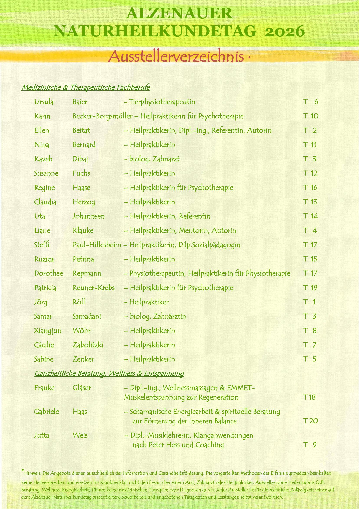
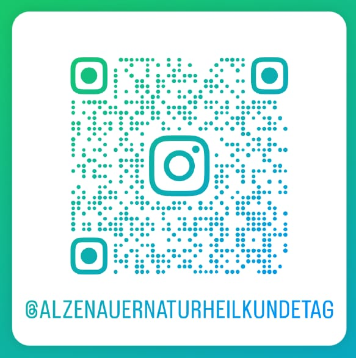
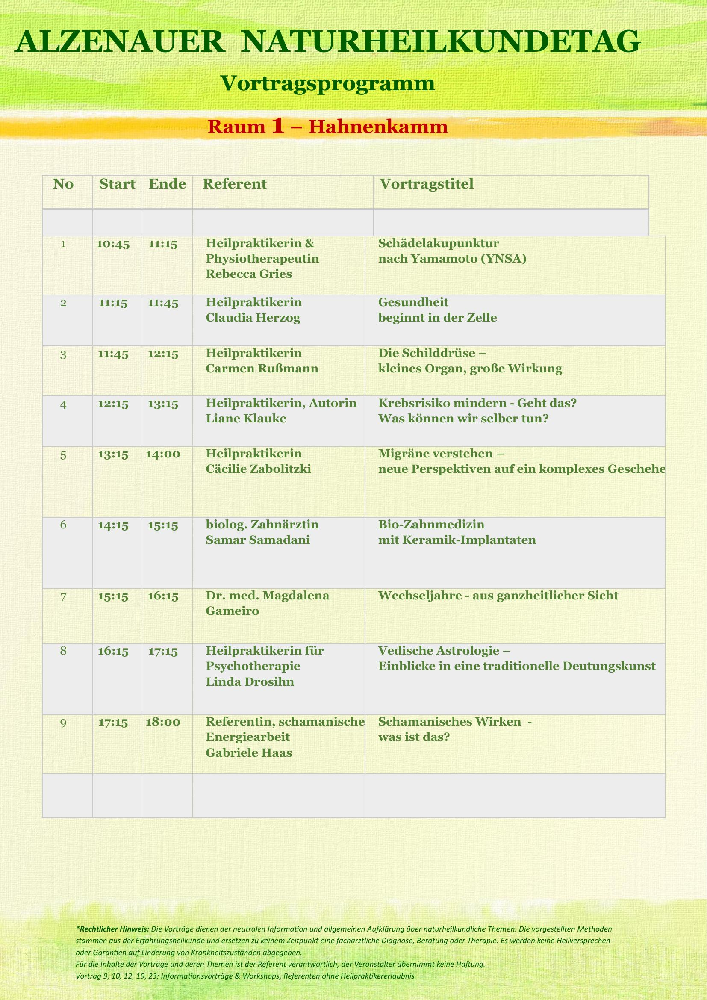

2. Alzenauer Naturheilkundetag · Gesundheitsmesse mit spannendem Vortragsprogramm · 27. September '26 · 10–18 Uhr · Eintritt frei
Faszinierende Vielfalt an naturheilkundlichen und ganzheitlichen Angeboten entdecken – für Mensch und Tier, von Kopf & Zahn bis Fuß. Mit Ausstellern und Fachleuten direkt ins Gespräch kommen.
Ort: Alte Post – Burgstraße 9, 63755 Alzenau
Veranstalter: Naturheilpraxis Beitat
Kontakt: AlzenauerNaturheilkundetag26@gmx.de
Unterstützt durch: Netzwerk gesund SEIN, Union Deutscher Heilpraktiker, Förderverein internationale Frauen e.V. [Platzhalter: Logoleiste ergänzen]
Das vollständige Ausstellerverzeichnis mit allen Fachrichtungen im Überblick:

🔍 Zum Vergrößern anklicken
Alle Aussteller im Detail auch auf Instagram:
@alzenauernaturheilkundetag

🔍 Zum Vergrößern anklickenAktuelles Programm auch auf Instagram:
@alzenauernaturheilkundetag
[Platzhalter: Vortragsprogramm Raum 2 folgt in Kürze]